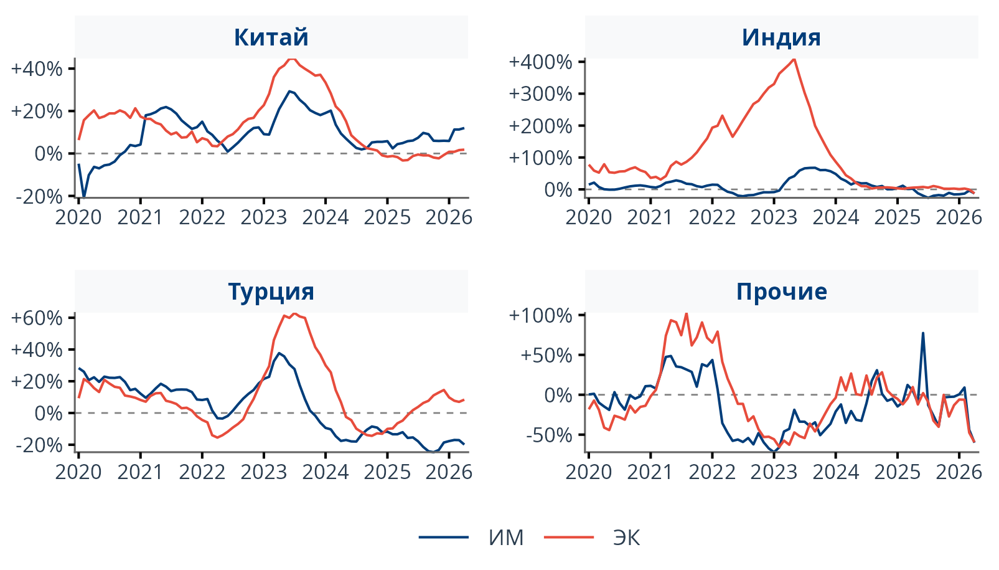
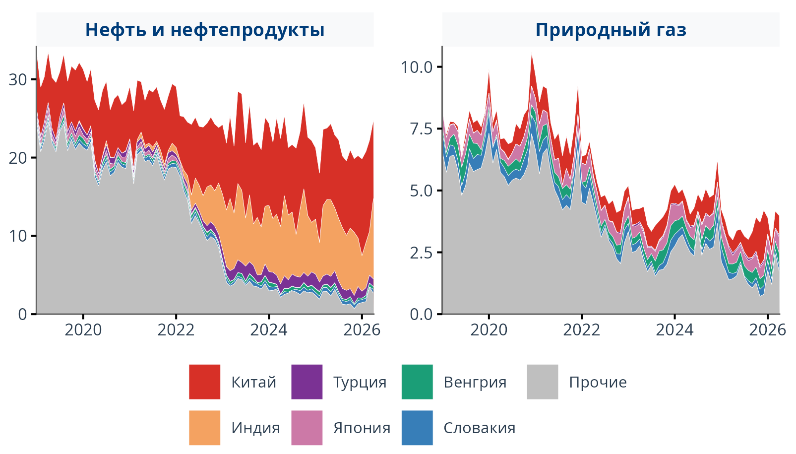

%%{init: {
"theme": "base",
"themeVariables": {
"fontSize": "14px",
"fontFamily": "Inter, Segoe UI, Arial, sans-serif",
"primaryColor": "#ffffff",
"primaryTextColor": "#2c3e50",
"primaryBorderColor": "#c5dff5",
"secondaryColor": "#e8f4fd",
"secondaryTextColor": "#003d7a",
"secondaryBorderColor": "#003d7a",
"tertiaryColor": "#f0f5ff",
"tertiaryTextColor": "#003d7a",
"tertiaryBorderColor": "#c5dff5",
"clusterBkg": "#f8f9fb",
"clusterBorder": "#c5dff5",
"lineColor": "#5a6a7a",
"titleColor": "#003d7a"
}
}}%%
flowchart LR
subgraph sources["📥 Источники данных"]
direction TB
A["Китай/Индия/Турция — нац. статистика<br/><i>оперативно · детально</i>"]
B["🏛️ Архив ФТС<br/><i>верификация 2014–2022</i>"]
C["🌐 UN Comtrade<br/><i>заполнение пробелов</i>"]
end
subgraph etl["⚙️ ETL · ядро системы"]
direction TB
D["Автосбор<br/>collectors"]
E["Гармонизация<br/>+ верификация"]
end
subgraph storage["💾 Единая база"]
F[("harmonized<br/><b>DuckDB</b>")]
end
subgraph access["🚀 Для пользователя"]
direction TB
G["Python API"]
H["Дашборды"]
I["Физобъёмы · FAVAR"]
end
A --> D
B --> D
C --> D
D --> E --> F
F --> G & H & I
style A fill:#ffffff,color:#2c3e50,stroke:#c5dff5
style B fill:#ffffff,color:#2c3e50,stroke:#c5dff5
style C fill:#ffffff,color:#2c3e50,stroke:#c5dff5
style D fill:#ffffff,color:#2c3e50,stroke:#003d7a
style F fill:#003d7a,color:#fff,stroke:#e74c3c,stroke-width:3px
style G fill:#e8f4fd,color:#003d7a,stroke:#003d7a
style H fill:#e8f4fd,color:#003d7a,stroke:#003d7a
style I fill:#fdecea,color:#c0392b,stroke:#e74c3c
style E fill:#f0fff4,color:#1e7a45,stroke:#27ae60
style sources fill:#f8f9fb,stroke:#c5dff5,color:#003d7a
style etl fill:#f8f9fb,stroke:#c5dff5,color:#003d7a
style storage fill:#f8f9fb,stroke:#c5dff5,color:#003d7a
style access fill:#f8f9fb,stroke:#c5dff5,color:#003d7a
Национальная торговая статистика
Инфраструктура для анализа внешней торговли России · МГИМО
Единая база данных, API и аналитические инструменты — когда официальные источники недоступны или запаздывают.
DuckDB · SQL · Parquet Python API Физобъёмы · FAVAR nowcast Superset
Проблема
Официальная таможенная статистика России перестала публиковаться в привычном открытом формате — аналитикам приходится искать обходные пути.
- Оперативные месячные данные по детализированной номенклатуре не публикуются
- Для текущего анализа нельзя опереться на «золотой стандарт» российской таможенной статистики
- Растёт спрос на альтернативные источники: зеркальная статистика, UN Comtrade, коммерческие платформы
Проблема
Без системного подхода
- ручная склейка CSV и Excel
- разные классификации и лаги публикации
- невозможность масштабировать выборки
- риск ошибок при сверке источников
Решение
Что нужно на практике
- единая структура данных по странам и ТН ВЭД
- прозрачность происхождения данных
- автоматическое обновление и воспроизводимость
- аналитика и поддержка качества данных
Что мы предлагаем
Программный комплекс для сбора, гармонизации и предоставления торговой статистики России на основе зеркальных данных стран-партнёров.
Гармонизированная база DuckDB Согласованные поля: страны, ТН ВЭД, периоды, стоимость и физические объёмы. Единая структура для всех источников.
6,8 млн строк · янв 2019 — апр 2026
138 стран-партнёров (Comtrade)
Национальные зеркальные источники
Индия — 540 тыс. Китай — 471 тыс. Турция — 322 тыс.
SQL · Parquet · CSV
Мульти-источниковый синтез Национальная статистика партнёров, UN Comtrade и архив ФТС — с приоритетом источников и флагом верификации. ФТС → нац. стат. → Comtrade
Расчёт физобъёмов торговли Восстановление пропусков, 12-месячные агрегаты и индексы физических объёмов на уровнях 2/4/6 знаков ТН ВЭД — редкий показатель, которого нет в большинстве веб-сервисов. тонны · штуки · м³
Python API и аналитика Пакетные запросы, дашборды, nowcast на основе FAVAR и готовые отчёты — данные и инструменты в одном контуре. API · Superset · FAVAR
Архитектура решения
Форматы доступа
Выгрузка базы данных
Полный снимок внешнеторговых данных в удобном формате:
- Выборочные периоды (месяцев, лет)
- Структурированные таблицы с согласованными полями
- Товарная классификация (ТН ВЭД) с несколькими уровнями агрегации
- Данные по странам-контрагентам
- Стоимостные и физические показатели
Интерактивные дашборды
Дашборд на основе Apache Superset:
- Собственные графики и отчёты без ручных расчётов
- Фильтры по товарам, странам, периодам в реальном времени
- Готовые решения, кастомизируемые под ваши задачи
- Экспорт результатов в различные форматы
Кастомизированные отчёты
- Excel-файлы по вашей структуре
- Автоматическое ежемесячное/ежеквартальное обновление
- Специальные метрики и индексы физических объёмов
- Гибкий выбор географии, товаров и периодов
Почему не TradeMap?
TradeMap — популярный веб-инструмент ITC, но для серьёзной аналитики и автоматизации он быстро упирается в ограничения интерфейса.
Веб-платформа
TradeMap
Справочная витрина ITC для обзорной торговой статистики.
HS до 6 знаков · стоимость в USD · без национальной номенклатуры (ТН ВЭД-8/10). Источник цифры и степень проверки не прозрачны.
- только браузер, без API
- лимиты на выгрузку
- нет гармонизации источников
- нет физобъёмов и nowcast
Подходит для разовых запросов
Международный архив
UN Comtrade
Глобальный архив сырой внешнеторговой статистики ООН.
Потоки reporter ↔︎ partner · 200+ стран. Физические единицы есть не по всем позициям. Опечатки в данных не устраняются.
- лимиты API и задержки
- разные форматы и лаги
- нужна ручная сверка
- нет готовой аналитики
Не готовое решение
★ Наша платформа
МГИМО Trade DB
Готовая база для регулярного анализа внешней торговли России.
Фокус: РФ × партнёры · месячная детализация · Китай, Индия, Турция + Comtrade + архив ФТС. Приоритет источников и источник происхождения каждой записи.
- API + SQL — автоматизация
- гармонизация ФТС + партнёры + Comtrade
- физобъёмы и индексы объёмов
- FAVAR nowcast + дашборды
Лучший выбор для регулярной аналитики
| TradeMap | МГИМО Trade DB | |
|---|---|---|
| Доступ и интеграция | ||
| Программный API | ✗ только браузер | ✓ Python API |
| Массовые выгрузки | лимиты интерфейса | ✓ без ограничений GUI |
| Сложные срезы | ручные сессии | ✓ пакетные запросы |
| Данные | ||
| Гармонизация источников | частично | ✓ ФТС + ЗС + Comtrade |
| Детализация номенклатуры | HS до 6 знаков | ТН ВЭД 2–10 |
| Физические объёмы | частично | ✓ + индексы физобъёмов |
| Прозрачность источника | ✗ | ✓ у каждой записи |
| Аналитика | ||
| SQL и агрегации | ✗ | ✓ DuckDB |
| Дашборды и отчёты | базовые графики | ✓ Superset + отчёты |
| Nowcast | ✗ | ✓ FAVAR |
Аналитика: от данных к выводам
Ежемесячный бюллетень, индексы физобъёмов, структурный анализ внешней торговли и оперативный nowcast.
Ежемесячный бюллетень Изменение физобъёма год к году

Структурный анализ Экспорт: нефтегаз vs прочие товары

Nowcast (FAVAR) — оперативные оценки при задержке официальной статистики. Прогноз отмечен в базе отдельным флагом и охватывает все уровни ТН ВЭД, страны и товарные группы.
Ключевые особенности
Физические объёмы тонны, штуки, м³ — не только USD
Индексы физобъёмов уровни 2/4/6 знаков ТН ВЭД и по странам
Гармонизация единые коды стран и единицы измерения
Nowcast (FAVAR) оперативные оценки при лаге статистики
Актуальность зеркальная статистика обновляется регулярно
Прозрачность источник и верификация у каждой записи
Как начать
1 Свяжитесь с командой
Уточните задачи: география, товары, формат выгрузки или отчёта.
2 Тестовый доступ
На этапе эксплуатации предоставляется бесплатно.
3 Развёртывание
Помогаем интегрировать данные в ваши процессы и аналитику.
Методология и техническая документация
Подробнее о гармонизации источников, расчёте индексов физобъёмов и nowcast — в технической документации.